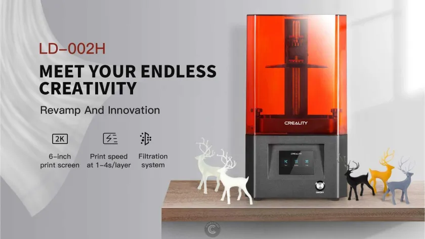

- Area di stampa di 130x82x160 mm
- Tra gli accessori in dotazione troviamo due spatole (una metallica e l’altra in plastica) per la rimozione delle stampe e la pulizia, un pennello, un kit di imbuti con filtro per recuperare la resina dopo ogni stampa, un release film di ricambio, una chiavetta USB e un kit di chiavi a brugola per le operazioni di manutenzione.
- Il software di slicing è il conosciutissimo CHITU BOX
- Le dimensioni: 221x221x403 mm per un peso complessivo di 8.3Kg.
Siete alla ricerca della vostra prima stampante 3D e non sapete quale scegliere? Probabilmente questa Creality LD-002H fa proprio al caso vostro!
Anche io ero indeciso ed ero completamente a digiuno in materia di stampa 3D, quindi ho deciso di testare un modello entry level per verificare quali fossero, nella realtà, le difficoltà legate alla gestione di questi processi.
Devo dire che i miei timori sono stati immediatamente fugati: la stampante è assolutamente user-friendly, è compatta, silenziona, pronta all’uso e il software è veramente intuitivo e alla portata di tutti!